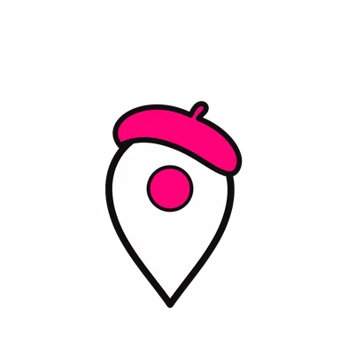

Spot 105 Paris
Sors plus, cherche moins.
Dis ce que tu as envie de faire ce soir. Livia trie les lieux ouverts et les soirées du moment à Paris, et te compose un plan en quelques secondes.
À quoi sert Spot 105 Paris ?
Spot 105 Paris est une application web gratuite pour trouver où sortir à Paris : bars, clubs, rooftops, restos et soirées du jour. Tu écris ton envie (« un bar latino puis un club »), Livia, la guide de l'app, choisit parmi les lieux ouverts et les soirées datées, et te propose un plan avec le trajet à pied.
Tu peux découvrir l'app sans compte. Un compte (par e-mail ou avec « Continuer avec Google ») sert seulement à garder tes spots et tes soirées sur tous tes appareils. Avec Google, l'app reçoit ton nom, ton e-mail et ta photo de profil, rien d'autre : le détail est dans la politique de confidentialité.
- Tu me dis
- Je trie
- Tu sors
Gratuit, dans ton navigateur. Sur iPhone : Partager → « Sur l'écran d'accueil ».
Spot 105 plans your night out in Paris: say what you feel like, Livia sorts open places and tonight's events, you go out.